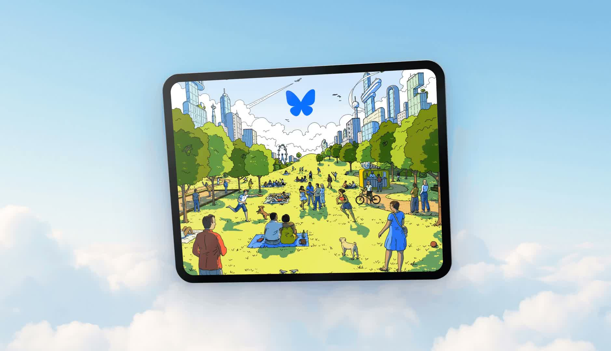
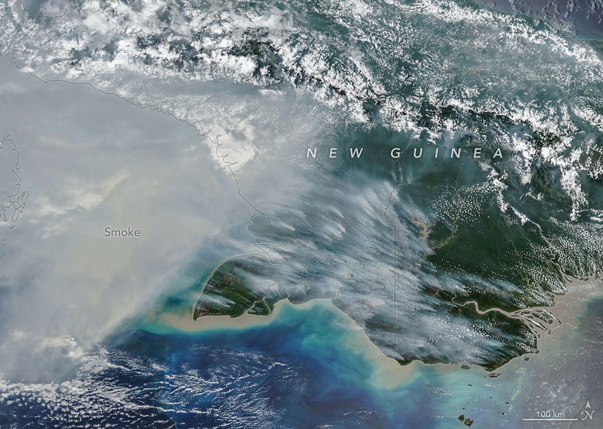

科技產品 T1

官方iPad beta公告歡迎插畫，非個人檔案連結操作介面。 Bluesky 官方公告影片縮圖
Bluesky 推出 v1.136，加入個人檔案連結與 iPad 測試支援
發佈時間
Bluesky／v1.136
Bluesky讓創作者在個人檔案放置網站、訂閱或贊助服務入口，同時把iPad支援以測試功能形式加入應用。
- v1.136已推出，個人檔案可加入Patreon、Ko-fi、電子報或網站等連結。
- iPad支援仍為beta，官方請使用者透過設定中的測試功能管道回報問題。
- 檔案連結是外部入口，不等同Bluesky內建金流或自動代收贊助款。
完整報告收合報告
事件背景與影響
創作者能把社群觸及導向自己的服務；平板支援則擴大閱讀及管理帳號的裝置選擇，但仍需留意測試品質。
事件與發佈依據
官方版本貼文10/22 16:11:13.754Z；iPad測試說明於16:30:02.437Z發布，均在截點前。
收錄紀錄
以Bluesky與iPad、1.136、平板組合查10/09–10/22十四份日報無命中；同窗54列產品表亦無此事件。
尚待確認
beta不代表每種平板情境都已穩定；本文未實測特定iPad。官方貼文網頁讀取失敗後以公開作者feed核對原始貼文及時間，未把失敗當成公告不存在。
相關實體與概念
Bluesky、iPad、個人檔案、創作者、外部連結、公開測試
科技產品 T2
1Password 發布多代理登入信任層，讓使用者核准後填入憑證
發佈時間
1Password／1Password for Agents
AI代理需要登入網站時，先經身分辨識並取得使用者裝置上的批准，再由1Password將憑證填入登入表單，而非把密碼交給模型。
- 官方描述以代理專屬識別金鑰確認請求來源，並由本人核准登入。
- 合作生態列出Muse、Claude Duet、ChatGPT Work、Grok Bot等代理產品。
- 各整合推出進度不同；新聞稿中Anthropic整合仍使用「即將」措辭，不能視為全部已開放。
完整報告收合報告
事件背景與影響
代理能否安全使用既有帳號，取決於權限與憑證交付方式；這種架構嘗試把登入秘密與模型可讀內容分開。
事件與發佈依據
官方10/22新聞稿標示09:00 EDT，換算13:00Z；本次為多代理平台及合作整合發布。
收錄紀錄
1Password與Agents、代理、整合組合查十四份日報無命中，同窗表亦無此平台發布；不是把七月既有Claude整合稱為首次發明。
尚待確認
不讓模型讀取密碼不等於登入後的代理不會誤操作。安全性為原廠架構說明，非本報測試；未確認所有地區、方案與合作產品同時可用。
相關實體與概念
1Password、AI代理、憑證、登入授權、裝置信任、最小權限
科技產品 T3
Arc 公布十二月二十二日停止桌面瀏覽器服務，立即關閉新帳號
發佈時間
The Browser Company／Arc、Arc Search
Arc從維護階段進入明確的終止流程。既有使用者目前仍可使用，但應在桌面服務停止前匯出需要保留的資料。
- 10/22起不再接受新帳號，既有帳號暫不受此項變更影響。
- 11/23起終止登入與同步，行動版Browse for Me等AI功能也將停用；iOS保留精簡瀏覽功能。
- 12/22起macOS與Windows版停止運作，帳號停用，相關資料預計於之後30日內刪除；Android版將下架及淘汰。
完整報告收合報告
事件背景與影響
瀏覽器承載書籤與工作流程，停用日期使備份與遷移成為有時限的工作，而不只是選擇是否嘗試新產品。
事件與發佈依據
Arc官網停用時間表明列10/22停止新帳號、11/23中止部分服務、12/22桌面停止運作；不虛構公告時分。
收錄紀錄
Arc與停用、sunset、12月組合查十四份日報無命中，同窗表亦無此次正式終止時間表；不同於過去維護模式消息。
尚待確認
桌面、iOS及Android的結果不同，不能概括為所有版本同日完全失效。官方建議Dia，但使用者可匯出至其他瀏覽器；本文不保證自動遷移或所有資料均可完整匯出。
相關實體與概念
Arc、Arc Search、The Browser Company、Dia、資料匯出、同步、服務終止
全球焦點 1
續報｜伊朗稱荷莫茲海峽七艘油輪起火或受損，通報尚待獨立確認
發佈時間
伊朗宣稱關鍵海峽有七艘油輪起火或受損；這是待查證的交戰方通報，不能直接當成七起已證實攻擊。
- 伊朗通報將損害歸因於打擊或水雷。
- AP當時未能獨立確認七艘油輪的全部說法。
- 新通報增加衝突再升級的疑慮，不能與先前貨櫃船沉沒合併計數。
完整報告收合報告
事件背景與影響
航運安全再惡化可能衝擊能源運輸與保險；決策仍需區分可核實船況與單方戰果宣稱。
事件與發佈依據
AP10/22 08:52:03Z報導當夜新一波通報，並非重刊先前船難。
收錄紀錄
10/15已收錄GFS Pride貨櫃船沉沒；本次新增是10/22伊朗對七艘油輪起火或受損的說法，船種、時間與通報內容不同。
尚待確認
通報數量、受損原因與各船狀態尚未獨立確認；不據此推定每艘都被擊沉或航道已完全關閉。
相關實體與概念
伊朗、荷莫茲海峽、油輪、水雷、能源運輸、航運風險
全球焦點 2
續報｜俄羅斯再以飛彈襲擊基輔，俄方同時宣稱攔截大批無人機
發佈時間
基輔在新一夜遭俄羅斯彈道飛彈攻擊。俄方另公布大規模無人機攔截數字，兩邊通報應分別判讀。
- AP報導基輔遭到新一輪夜間飛彈攻擊。
- 俄方宣稱攔截808架無人機，並稱其中大批朝莫斯科方向飛行。
- 攔截數字屬俄方說法，不能當作獨立核實的損失統計。
完整報告收合報告
事件背景與影響
外交接觸並未排除對城市的軍事打擊，防空與平民安全仍是即時風險。
事件與發佈依據
AP10/22 07:12:41Z報導新一夜攻擊；事件為當夜基輔遭襲及俄方當天攔截通報。
收錄紀錄
10/22日報已收錄烏克蘭相關三方會談；今日新進展是會談之外的實際飛彈攻擊與無人機攔截聲明，不是重述談判安排。
尚待確認
雙方戰時數據未能全面獨立查證；本文不把攔截聲稱換算成命中率，也不以外交接觸推定已有停火。
相關實體與概念
烏克蘭、俄羅斯、基輔、莫斯科、彈道飛彈、無人機、防空
全球焦點 3
續報｜歐洲議會將薩哈羅夫獎頒給國際刑事法院及其工作人員
發佈時間
歐洲議會以思想自由獎表彰ICC及其工作人員，將對國際司法獨立的支持轉為正式授獎決定。
- 得獎對象是國際刑事法院與其工作人員。
- 決定由歐洲議會主席及政治團體領袖組成的會議作成，不能稱為全體議員逐案表決。
- 正式頒獎典禮預定十二月在史特拉斯堡舉行。
完整報告收合報告
事件背景與影響
在法院承受政治壓力時，授獎具有制度聲援意義，但象徵支持與解除實際制裁是兩回事。
事件與發佈依據
AP10/22 10:05:58Z與歐洲議會議長當日公告確認得獎結果；不是等待中的提名。
收錄紀錄
10/10已收錄美國擴大制裁ICC；本次新增是歐洲議會主席團會議選定法院及人員為2026年得獎者，並非制裁已解除。
尚待確認
授獎不會自動撤銷美國制裁，也不等於已啟動任何歐盟反制法律措施；典禮仍是未來安排。
相關實體與概念
歐洲議會、國際刑事法院、薩哈羅夫獎、司法獨立、制裁
全球焦點 4
巴西法院要求保障原住民參與決選，處理偏遠地區交通障礙
發佈時間
法院要求聯邦政府確保原住民能參加決選，將偏遠地區的投票可及性納入選務保障。
- 裁定針對帕拉州原住民選民的實際投票障礙。
- 檢方要求提供免費水陸空運輸及必要協助。
- 命令發生於決選前，並非對選舉勝負的判決。
完整報告收合報告
事件背景與影響
法律上的投票權若缺乏實際交通支援，仍可能無法行使；裁定將責任轉向執行機關。
事件與發佈依據
AP10/22 19:23:49Z報導帕拉州聯邦法院當日命令，針對即將到來的星期日決選。
收錄紀錄
十四份日報未見此次原住民投票交通裁定，列為新司法行動。
尚待確認
裁定不代表所有接駁都已安排完成；跨機關執行與偏遠社群的實際覆蓋仍待追蹤。
相關實體與概念
巴西、帕拉州、原住民、聯邦法院、投票權、交通可及性
全球焦點 5
翁山蘇姬之子稱五年多來首次與母親通話，並非獲釋消息
發佈時間
Kim Aris表示終於與被拘禁的母親通話，這是超過五年來首次直接交談，但她仍未恢復自由。
- Kim Aris於星期四對外確認與母親通話。
- 緬甸軍方稱通話經駐倫敦使館安排。
- 81歲的翁山蘇姬自2021年政變後一直受拘禁，目前為軟禁狀態。
完整報告收合報告
事件背景與影響
長期失去直接聯繫後的通話提供新的接觸管道，卻不能替代獨立探視或完整健康資訊。
事件與發佈依據
Myanmar Now首發metadata為10/22 09:47:46Z，Reuters當日亦報導Kim Aris聲明；不使用較晚更新時間。
收錄紀錄
十四份日報未見此次母子通話事件；先前照片及禮物消息不是本次新進展。
尚待確認
家屬與軍方對通話的確認不等於獨立醫療評估；不能據此宣稱她已獲釋、健康無虞或拘禁條件全面改善。
相關實體與概念
翁山蘇姬、Kim Aris、緬甸、政治拘禁、家屬聯繫
全球焦點 6
德國逮捕涉嫌替俄羅斯蒐集軍事產業情報的烏克蘭籍男子
發佈時間
德國檢方表示，一名烏克蘭籍男子涉嫌透過中間人向俄羅斯情報機構提供軍事與產業資訊，已在布蘭登堡被捕。
- 檢方以Vadym Y.稱呼嫌疑人，指控活動可追溯至2025年七月。
- 涉及軍事產業與北約東翼資訊，包括公開資料及向業界人員探詢。
- 後續將交由法官處理羈押程序，逮捕本身不是有罪判決。
完整報告收合報告
事件背景與影響
案件顯示軍事產業及北約部署資訊是情報活動目標，也提醒應區分公開資料蒐集與涉嫌受指揮的行為。
事件與發佈依據
Reuters10/22報導德國檢方當日公布的逮捕；轉載站時間未另推定為原始發布時分。
收錄紀錄
十四份日報未見此名嫌疑人與本次逮捕行動，非既有案件評論。
尚待確認
指控尚待司法審理；嫌疑人的國籍不能單獨證明任何國家授意，也不能把檢方說法寫成定罪事實。
相關實體與概念
德國聯邦檢方、布蘭登堡、俄羅斯、北約、反情報、無罪推定
全球焦點 7
古巴交通部長預估全年大眾運輸客運量銳減四分之三
發佈時間
古巴交通部長表示，燃料短缺使公共運輸跌至低谷，全年客運量預估比去年少約75%。
- 75%為年度預估降幅，而非單日即時統計。
- 部長稱哈瓦那至各省每日巴士班次由2025年的419班降至今年11班。
- 官方把燃料封鎖列為主因，公共運輸困境也需放在既有能源與設備壓力下理解。
完整報告收合報告
事件背景與影響
交通崩縮直接影響就業、就醫與跨省活動；電動化替代也受電力供應限制。
事件與發佈依據
Reuters轉載ThePrint標示10/22 17:00 IST，即11:30Z；新內容為部長本週對今年運輸規模的評估，不把年初燃料問題當今日首發。
收錄紀錄
十四份日報未見此次交通部長新估計與路線運能數據。
尚待確認
數據與原因判讀主要來自部長，全年結果仍可能變動；不能由單一數字推定所有路線停駛，亦未獨立驗證每班車實際運行。
相關實體與概念
古巴、Eduardo Rodríguez Dávila、公共運輸、燃料、電力、客運量
全球焦點 8
損失與損害基金為尼泊爾洪災復原編列兩千萬美元
發佈時間
國際損失與損害基金為尼泊爾編列2,000萬美元，用於八月洪災後的救助、復原與重建。
- 基金董事會於星期四作成2,000萬美元分配決定。
- 對應Bhotekoshi與Trishuli流域八月二十六日洪災損害。
- 分配額不等於資金已全部匯入尼泊爾或災民已收到款項。
完整報告收合報告
事件背景與影響
氣候損害融資從制度承諾進入具體國別分配，但撥款、專案設計與受災者取得資源仍是後續關鍵。
事件與發佈依據
Kathmandu Post10/22報導當日基金董事會分配決定；頁面21:20為更新時間，不當成首次發布時刻。
收錄紀錄
十四份日報未見此筆基金分配；八月洪災是背景，新事件是十月董事會核配資金。
尚待確認
資金分配、申請專案金額與實際撥付是不同階段；尚不能據此宣稱所有重建經費到位，也不採用來源不明的不同金額。
相關實體與概念
尼泊爾、損失與損害基金、氣候融資、洪災、復原、董事會分配
全球焦點 9
續報｜法國收緊示威限制，里昂禁止週六集會並調整其他遊行安排
發佈時間
法國政府進一步限制部分示威，工會活動仍可能被要求改道；馬克宏將動亂歸咎極左派，但此歸因應與已發布禁令分開。
- 馬克宏在與情報及部會官員會商後，要求限制被政府認定不合法的示威。
- 里昂當局禁止星期六所有示威，巴黎學生集會也受到限制。
- 工會示威可能調整路線，不等於法國全境所有活動一律永久禁止。
完整報告收合報告
事件背景與影響
措施直接影響集會自由與公共安全管理，地方適用範圍比概括政治表態更值得追蹤。
事件與發佈依據
Reuters10/22報導馬克宏與官員會商後的新限制及地方禁令；具體措施為本次新進展。
收錄紀錄
10/20已收錄考慮局部宵禁及馬賽部分集會禁令；本次新增里昂週六全面示威禁令、巴黎學生集會限制與後續遊行安排。
尚待確認
政府對極左派的指責不等於司法認定；各地命令與例外需逐案核對，本文不把局部禁令泛化成全國永久禁止集會。
相關實體與概念
法國、馬克宏、里昂、巴黎、工會、集會自由、公共安全
全球焦點 10

10月11日衛星影像；10月22日發布的評估使用較早影像，非發布當日現場。 NASA Earth Observatory／Michala Garrison；NOAA-20 VIIRS、EOSDIS LANCE／GIBS、JPSS
NASA 發布新幾內亞火災評估，巴紐同期碳排放估值創紀錄
發佈時間
NASA彙整衛星及全球火災排放資料庫資料，指出新幾內亞乾旱與火災擴大，巴布亞紐幾內亞今年同期火災碳排估值達紀錄水準。
- GFED估計截至10/17，巴布亞紐幾內亞火災已排放接近3,200萬公噸碳。
- 印尼側新幾內亞火災排放估值超過3,500萬公噸碳，兩側應分開理解。
- 本文配圖是NOAA-20於10/11取得的衛星煙霾影像，不是10/22現場照片。
完整報告收合報告
事件背景與影響
煙霾、乾旱與火災排放連動，顯示熱帶地區異常乾燥可能同時影響健康、生態與碳循環。
事件與發佈依據
NASA Earth Observatory文章首發metadata為10/22 00:01 EDT，即04:01Z；新事件是評估發布，衛星圖片拍於10/11，排放估算截至10/17。
收錄紀錄
十四份日報未見本次NASA／GFED火災評估；未把較早的火災或影像拍攝日偽裝成今日事件。
尚待確認
排放是衛星與模型估值，不是逐火場直接量測；單位為碳而非二氧化碳，不能直接混用。NASA是在轉述GFED資料，並非另一套獨立重測結果。
相關實體與概念
巴布亞紐幾內亞、印尼、NASA、NOAA-20、VIIRS、GFED、火災排放、乾旱
研究備註
時間、來源與後續追蹤
研究截點 2026-10-23 08:01:49（Asia/Taipei）
研究時間與範圍
研究截點：2026-10-23 08:01:49（Asia/Taipei）。全球新聞：2026-10-22 08:01:49 至 2026-10-23 08:01:49（Asia/Taipei）。科技產品：2026-10-09 08:01:49 至 2026-10-23 08:01:49（Asia/Taipei）。